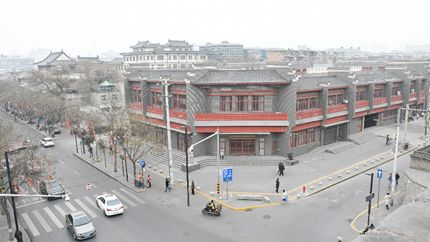
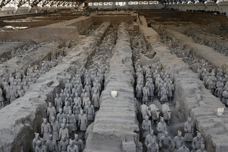

【秦简拓语·十七】调研是最浪漫的喜悦

披五岳之图以为知山，不如樵夫之一足;谈沧溟之广以为知海，不如估客之一瞥;疏八珍之谱以为知味，不如庖丁之一啜。
——魏源
西安在快手抖音上火了，那里有摔碗酒，那里有夜景房。
被城墙围起的城市，在千百年来安稳度过，但它似乎在互联网时代开始一路狂奔，迅速解构，期望在新的时代潮流中，在全国人心中建立起一座“网红城市”。

来到西安，一路文化调研之行，我眼中的景象又与想象中的网红新城市不一样，它还是那个十三朝古都，还是那个历史文化古迹名城。它北有汉阳陵，南有陕历博，中有碑林馆钟鼓楼，文化古迹的痕迹存在于城市各个角落。

举世无双的秦始皇兵马俑，是享誉世界的历史文物。调研期间，看到它规模宏大，个性鲜明，千人千面，想象着它经历过无人处、黑暗处的孤寂，也享受着聚光灯，暴风眼的喧嚣。这样一大景观，像极了所在的城市——西安。西安也曾经过古都盛世千年，也曾远离中心千年，现在又作为文化名城，年轻新城重新出现在人们眼中。

来到大唐芙蓉园，这里是曾经是唐代皇家园林芙蓉园，历代帝王来此游乐，但随朱温一声令下，昔日辉煌化作黄土，今日文化主题公园为仿照唐代园林重新建造。但古迹的消逝，没有抹去西安历代人对文化的记忆。在此调研，看到宏伟的大唐盛世建筑，精彩绝伦歌舞盛典《梦回大唐》，神奇秀丽的园林植被，以及现代化的服务游客设施。我突然明白，在人们的心中的文化古城，一直在发展，以文化的底蕴，借助现代技术，寻求更广阔的国际认知。


文化古迹调研之行，让我看到一个与之前所想完全不同的城市。历史气息与时尚科技的碰撞，造就了独特的城市。这是一个继承文化的城市，也是一个渴求年轻的城市。
时间流逝，发源的起点已被抛之身后，但这远不是发展的终点，前进的脚步依旧有力。

来源丨行者无疆实践团
文字丨陈子健
排版丨牛直达
审核丨潘雯雯 邓子孚
行者无疆实践团
QQ：2758025831

随行者一起认识世界
长按二维码关注